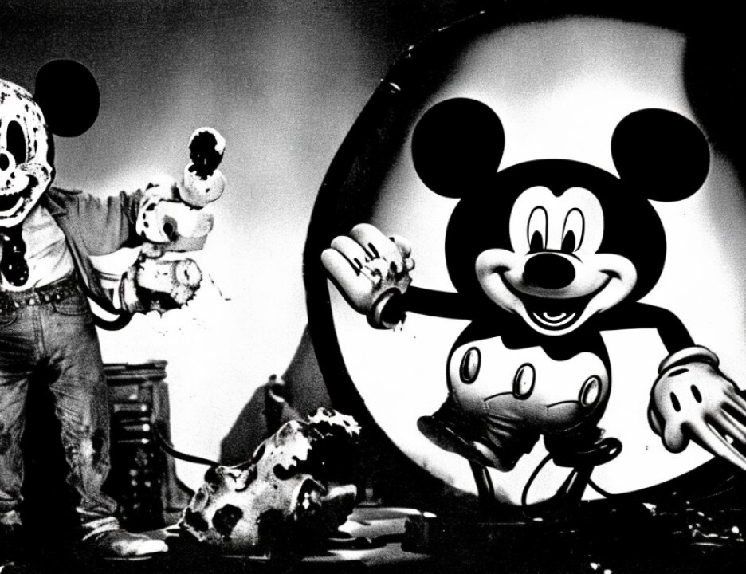

6 telephone in Nairobi which was subscribed to Wadih El Hage.
7 During part of that time period, the telephone was wiretapped
8 to intercept facsimile transmissions to and from the telephone
9 number, which were recorded on a machine in a secure location
10 in the Nairobi area.
11 "The fax transmissions recorded included the
12 following government exhibits, which were received on or about
13 the date and time indicated, and outgoing faxes were sent to
14 the telephone number indicated."
15 The first is Government's Exhibit No. 245, with a
16 date of February 25, 1997, a time of 5:56 a.m., and a
17 telephone number called listed as fax.
18 The second is Government's Exhibit No. 246, which has
19 a date of August 2nd, 1997, and a telephone number called
20 listed as fax.
21 "It is further stipulated and agreed that the
22 government and the defendants are agreeing to the authenticity
23 of the recordings and facsimiles as specifically described in
24 paragraphs 1 through 3 above, and more generally in the
25 preceding paragraph."
3868
1 And at this time the government would offer into
2 evidence Government Exhibits 245 and 246.
3 THE COURT: And the stipulation, 36?
4 (Government Exhibits 245 and 246 received in
5 evidence)
6 MR. BUTLER: And the stipulation is 36, which has
7 already been received in evidence.
8 THE COURT: All right. I'm going to ask that the
9 government prepare prior to April 16th -- when I say "the
10 government prepare," Mr. Fitzgerald gets a pained look on his
11 face.
12 MR. FITZGERALD: It slows me down.
13 THE COURT: -- a document which will list the number
14 of every stipulation and just a brief description of its
15 contents, and that list itself is to be in the form in which
16 it is admissible as an exhibit.
17 MR. BUTLER: And your Honor, now we would like to, on
18 the left side of the screen, publish to the jury Government
19 Exhibit 300B-T, previously admitted into evidence, which is a
20 document recovered from a computer that was seized during the
21 search previously testified to by Agent Daniel Coleman. And
22 on the right-hand side of the screen we would like to publish
23 Government Exhibit 245-T, which is a translation of Government
24 Exhibit 245. And Government Exhibit 245-T was received in
25 evidence yesterday.
3869
1 (Pause)
2 THE COURT: Next.
3 MR. BUTLER: It's not coming up on the screen. A bit
4 of a technical difficulty.
5 (Pause)
6 MR. BUTLER: Reading from Government Exhibit 300B-T,
7 but we'll display both documents simultaneously.
8 (Government Exhibit 300B-T read)
9 MR. BUTLER: I note that the version on Government
10 Exhibit 300B-T on the left is signed "your brother, Abu Hafs,"
11 which is not on the document.
12 Now if we could show Government Exhibit 321, which
13 has been previously entered into evidence. If we could focus
14 on August 2, 1997 at 17:52. Focus on the calls to the United
15 Kingdom, we can see a call -- we start from the left, we see a
16 call from 820367, a UK number 4433, and the date is August 2,
17 1997 and the time is 17:52.
18 Now if we could display Government Exhibit 660, which
19 is a chart that was entered this morning, page 2, you can see
20 the calls from 1812084433.
21 Now if we could go to Government Exhibit 246, we
22 could focus on the fax header at the top of the page. You see
23 "W, phone number 820067, August 2, 1997, 5:52 p.m., page 1."
24 And if we could now go to Government Exhibit 246T,
25 which is the translation of Government Exhibit 246, I'll read
3870
1 from 246T.
2 (Government Exhibit 246T read)
3 MR. KARAS: Your Honor, we would now propose to -- if
4 we could pull up on the left side of the screen Exhibit
5 1629-234, an address book found at 94 Dewsbury Road, and on
6 the right side of the screen, if we could pull up the first
7 page of Government Exhibit 1586-1, and reading from the
8 Exhibit 1629, the attorney/professor Adel Abdel Majeed,
9 office: 01819640087. And reading from the first page of 1586,
10 which are phone records previously entered by a stipulation,
11 name, Mr. A. Abdel Majid T/A, IODEP, A, below that 15A
12 Beethoven Street, London W10, and on the far right, Tel.
13 number 0181-9640087.
14 And if on the right we could pull up the first page
15 of Government Exhibit 1593 to highlight the middle there,
16 reading from the exhibit on the left, 1629, the second number,
17 01819608904, and then reading from the first page at 1593,
18 Mr. A. Abdel-Majed T/A Addalil, 6 Macefield Studios, 1A
19 Beethoven, London, W10, and from the right, 01819608904.
20 If we could display on the left side of the screen
21 1631-T11A, a different address book found at 94 Dewsbury, and
22 if we could highlight the entry Adel Abdel Majeed, just
23 highlight it, and on the right if we could pull up the first
24 page of Exhibit 1591 and highlight the middle of that page,
25 and reading from the exhibit on the left 1631, Adel Abdel
3871
2